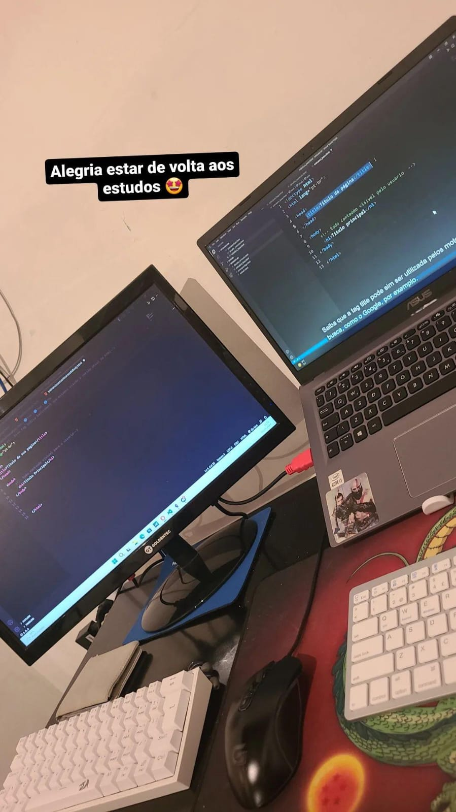

1 de junho de 2022
Maquina do tempo
Jornada Do zero a primeira vaga
O começo da jornada
Esse registro foi de uma das primeiras aulas que tive de lógica de programação. Onde tive meus primeiros passos nesse meio, e tive certeza de que estava onde deveria estar. Foi o momento onde vi que estava certo quando criança e falava pra todo mundo que queria "trabalhar com o computador fazendo coisas bem massa".
2 de maio de 2023
Maquina do tempo
Jornada Do zero a primeira vaga
Até agora...

Recentemente completei um ano cursando Sistemas. Estou bastante feliz com essa jornada na programação. Sinto que estou no lugar certo para trilhar o meu futuro!
Até o presente momento ja tive contato com linguagem interpretada, orientada a objetos, estudos sobre java mais aprofundado por meio de cursos por fora. E agora estou tendo meu contato com a area de front-end. Tudo está sendo muito empolgante, e pretendo sempre estar disposto a aprender mais e mais
...
Maquina do tempo
Jornada Do zero ao Desenvolvedor Full Stack
Metas para o futuro
Para o meu futuro, espero estar trabalhando tranquilo em projetos e/ou empresas em que eu me sinta a vontade. Ganhando o valor que eu ache merecedor do mesmo. Conseguindo bater expectativas no ambiente em que eu estiver! Desejo estar apto para qualquer tipo de trabalho em minha area de acordo com minhas especialidades, que serão para o meio de Full Stack. Pra cima deles!